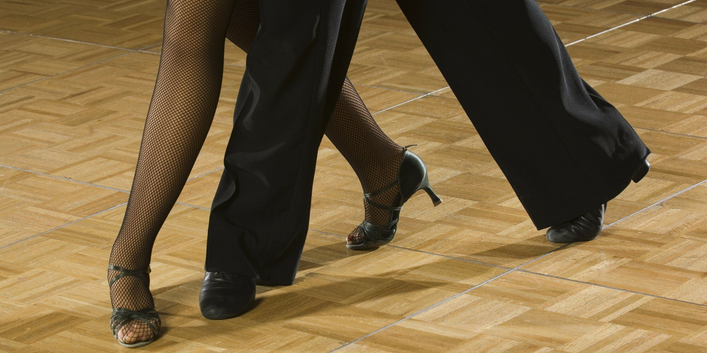

The Nine Rumba Walks
24 February 2016
Many of us started practicing our Rumba Walks as beginners, not knowing what we were doing, but being told it was important. In fact, it is a great medium for analysing and correcting posture, movement, footwork, and other various technical issues. Fourteen time undefeated Professional Latin World Champion Gaynor Fairweather was known for dancing Rumba Walks for half an hour per day for that very same purpose.
When we talk about Rumba Walks, most people think of the Forward Walk, but did you know there are seven other ways to dance a Rumba Walk? Below you can read a brief overview of the various different Rumba Walks, each deserving of careful and studious practice just as much as the others. If you click the links within each Walk, you will be directed to full descriptions of their techniques, as well as links to figures where you will use those types of Walks. Don't forget that all of these Walks are also used in Cha Cha.
| 1 | The Forward Walk |
| This is the Rumba Walk we all practice, going forward endlessly around the room, and using it to work on leg and body action. This Walk is used in countless figures, such as the Open Basic and the Progressive Walks. A full technical description of this walk can be found here. | |
| 2 | The Checked Forward Walk |
| This type of Forward Walk has one purpose - to stop forward progression and start backward progression. It is used in almost every figure, from the Basic Movement to the Closed Hip Twist, more often danced by the Man, but danced by the Lady in many figures as well. A full technical description of this walk can be found here. | |
| 3 | The Extended Forward Walk |
| This type of Forward Walk creates a delay in the rhythm and may provide an emotional change of shape in a figure such as the Lady's Spiral, or Alemana. A full technical description of this walk can be found here. | |
| 4 | The Pressed Forward Walk |
| Use this type of Forward Walk to end a forward progression in one direction, followed by a very quick turn to a new forward direction. It also provides the possibility of creating the correct shape between partners to provide an intimate visual connection without being too close to the partner, which would make such a connection uncomfortable. It is used by the Lady in the Closed Hip Twist and the Sliding Doors. A full technical description of this walk can be found here. | |
| 5 | The Forward Walk Turning |
| This type of Forward Walk is used mostly by the Lady, but a fair by by the Man as well. It is used to go from walking forward in one direction to walking forward in a completely different direction, typically a turn of 180°, but sometimes slightly more or less. It is used in the Alemana, and Spot Turns. A full technical description of this walk can be found here. | |
| 6 | The Backward Walk |
| The Backward Walk is fundamentally what the Forward Walk would look like if played in reverse. The Lady typically dances more Backward Walks than the Man, but it is performed by both dancers also in the Open Basic and the Progressive Walks. A full technical description of this walk can be found here. | |
| 7 | The Extended Backward Walk |
| The Lady usually dances this type of Walk when commenced with feet together in a Sit Line, or other Stationary Position such as the commencement of the routine. This allows for a compression in the connection as the Man approaches the Lady while she delays her action, and then a quick explosion of dynamics within the partnership when she quickly moves back. A full technical description of this walk can be found here. | |
| 8 | The Pressed Backward Walk |
| The Man uses this type of walk whenever he dances a Cuban Cross action, crossing one foot behind the other on the Toe, then (optionally) lowering to the Flat of the foot later. It is used in the Natural Top, and in the Sliding Doors. A full technical description of this walk can be found here. | |
| 9 | The Backward Walk Turning |
| This type of walk fundamentally similar to the Forward Walk Turning, but in practice it looks a bit different. It commences as a step side and slightly back, and turns to end directly to the side. It is used in some basic figures, including the Closed Basic when it is turned, step 3 for the Man and step 6 for the Lady. |